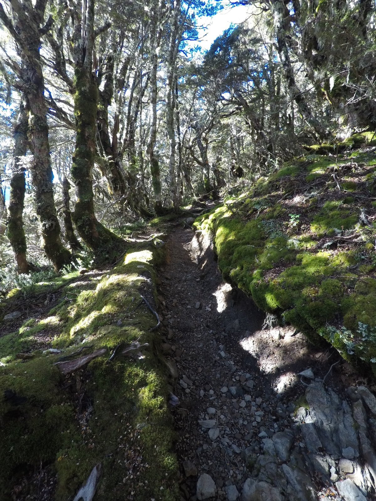

← Back to photos

PHOTO · 2019
Avalanche Peak, New Zealand
A view taken during the climb up Avalanche Peak in Arthur’s Pass on the South Island.

PHOTO · 2019
A view taken during the climb up Avalanche Peak in Arthur’s Pass on the South Island.